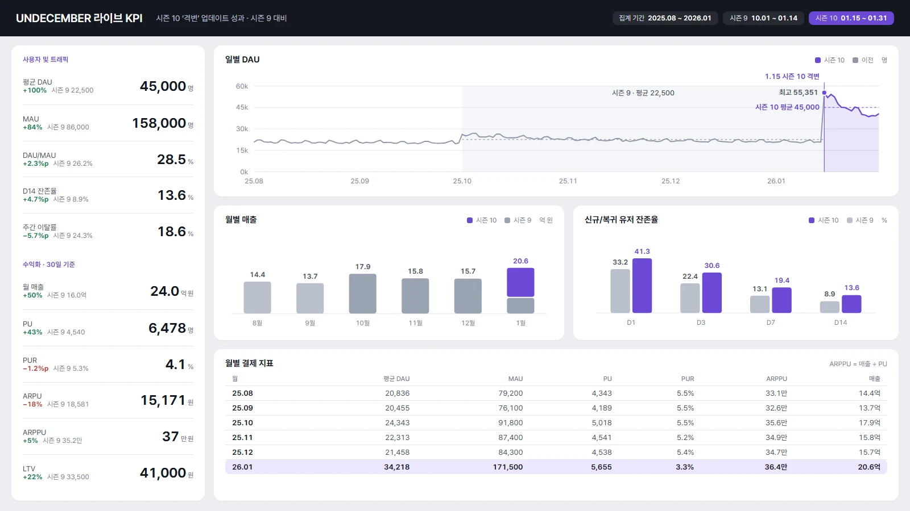
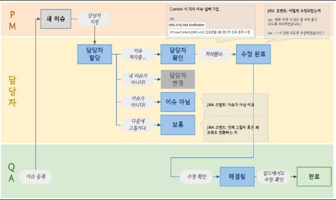
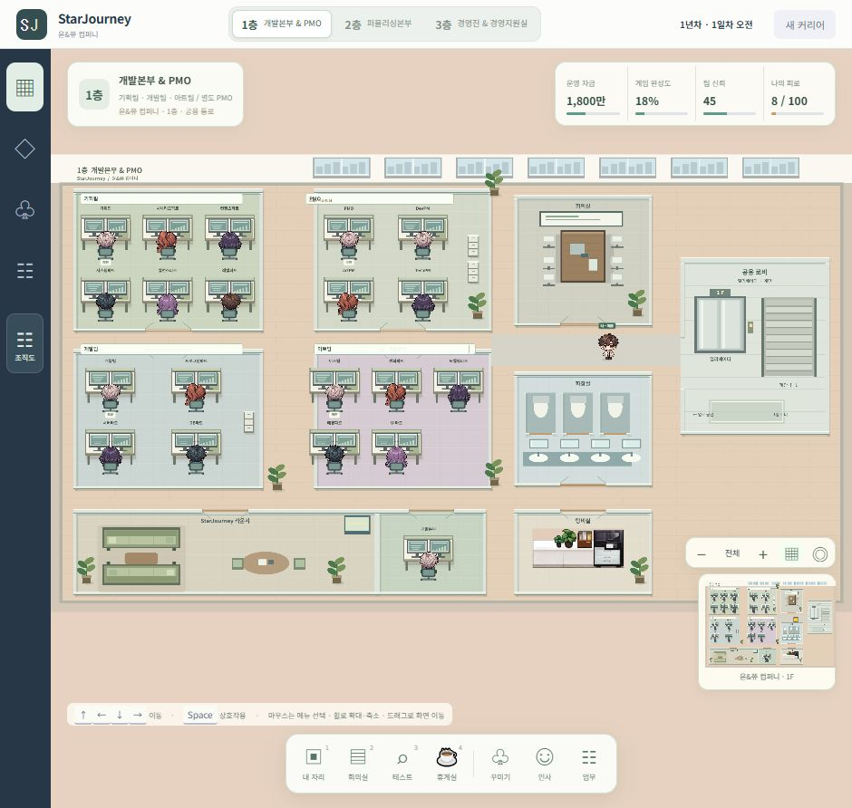

포트폴리오 2026
박재윤
게임 개발/서비스 PM
QA와 개발 PM을 거쳐 라이브 서비스와 사업 기획을 맡았습니다. 개발, 아트, 사업 조직이 같은 일정으로 움직이도록 필요한 정보를 나눠 정리하고, 결정한 일은 담당자와 기한까지 기록해 둡니다.


박재윤 포트폴리오1 / 15
포트폴리오 2026
게임 개발/서비스 PM
QA와 개발 PM을 거쳐 라이브 서비스와 사업 기획을 맡았습니다. 개발, 아트, 사업 조직이 같은 일정으로 움직이도록 필요한 정보를 나눠 정리하고, 결정한 일은 담당자와 기한까지 기록해 둡니다.
개발과 QA, 론칭과 라이브 운영을 거쳐 서비스 운영과 사업 기획을 경험했습니다. 개발, 아트, 사업 조직과 협의할 때는 각 조직이 확인할 내용을 나눠 정리하고, 결정한 일은 담당자와 기한을 기록합니다.
상대가 알아야 할 정보를 먼저 정리합니다. 설명만으로 부족하면 일정과 작업 자료를 함께 보여줍니다.
중요도와 기한을 함께 확인합니다. 여러 요청이 겹치면 먼저 처리할 일을 정하고 일정을 조율합니다.
업무와 요청을 기록해 빠뜨리지 않도록 합니다. 완료 여부와 후속 작업까지 확인합니다.
내가 전달한 내용보다 상대가 이해한 내용을 봅니다. 각 조직의 상황과 필요한 정보를 생각하며 설명합니다.
담당자와 기한, 진행 상태를 정리하고 회의 결정을 후속 작업으로 남깁니다.
빌드와 브랜치, 변경 내용을 확인하며 개발과 업데이트 준비를 조율합니다.
WBS와 공정률을 정리하고, 미리 튜닝된 SQL로 조회한 데이터를 Power BI 화면으로 만들었습니다.
업무 조건과 처리 규칙을 정리해 구현을 맡기고, 실제 데이터로 결과를 확인합니다.
SK주식회사 C&C, KB국민은행 The K
로드컴플릿, 가디스 오더
LEGEND OF SLIME, PROJECT NEON, PROJECT DME
니즈게임즈, UNDECEMBER
블로믹스, TALES RUNNER
회사별 재직 기간과 프로젝트 참여 기간입니다.
로드컴플릿에서는 가디스 오더와 LEGEND OF SLIME에 함께 참여한 기간이 있습니다. SK주식회사 C&C의 VDI 소프트웨어 도입 검증은 참여 기간 기록이 없어 막대에서 뺐습니다.
UNDECEMBER를 먼저 두고 나머지는 최근 프로젝트부터 정리했습니다. 각 사례에는 맡은 범위와 실제로 한 일만 적었습니다.
| 프로젝트 | 역할 | 기간 | 주요 내용 | 확인한 수치 | 쪽 |
|---|---|---|---|---|---|
| UNDECEMBER니즈게임즈 | Live Service PM | 2025.10 – 2026.01 | 사업 기획의 콘텐츠 영향과 개발 범위를 검토하고 일정, 빌드, 업데이트, 라이브 이슈를 조율 | DAU 약 2배 | 5 |
| TALES RUNNER블로믹스 | Business / Service PM | 2026.06 – 2026.07 | 자진신고 캠페인 추진안 기획과 유관부서 협의, 21주년 복귀 이벤트 기획 초안 | 7 | |
| PROJECT DME너드포 | Development PM | 2026.05 | Jira, Notion, Google Sheets 사이의 반복 작업을 자동화하고 실제 업무 데이터로 처리 규칙 검증 | 19개 언어 열 | 8 |
| PROJECT NEON액트파이브 | Development PM | 2024.02 – 2024.12 | 개발 일정과 리소스, 외부 협력사 일정 조율. 회의 결정 사항에 담당자와 기한을 붙여 관리 | 회의 만족도 약 70%↑ | 9 |
| LEGEND OF SLIME로드컴플릿 | Development PM | 2022.03 – 2023.05 | 개발 범위와 일정 조율, 출시 준비, 론칭 이후 업데이트와 라이브 이슈 대응 | 팀 30 → 80명 | 10 |
| 가디스 오더로드컴플릿 | Development PM, 개발 QA | 2021.04 – 2024.01 | 테스트 설계와 검증, Jira 이슈 처리 절차를 4단계로 나누고 단계별 담당자 지정 | 미지정 이슈 1,000건+ | 11 |
| KB국민은행 The KSK주식회사 C&C | 데이터 가공/분석 | 2020.05 – 2020.12 | SQL로 조회한 데이터를 Excel로 가공하고 Power BI 대시보드 제작. VDI 소프트웨어 도입 검증 | 12 |
| AI 활용 방식 | 반복 작업을 맡길 기준과 결과를 원본과 대조하는 순서 | 13 |
| BM 기획 제안 | 공개 정보를 바탕으로 한 두 게임의 사용자 경험과 BM 분석 제안 | 14 |
기획서의 콘텐츠 영향과 개발 범위를 검토해 일정을 잡고, 빌드가 나가기 전 이슈 완료 여부를 확인했습니다. 업데이트 이후에는 라이브 이슈를 일일 단위로 갱신했습니다.
사업 기획서 검토 후 작업 범위와 담당자, 개발/QA/운영 일정을 조율
빌드 전 이슈 완료 여부를 점검하고 빌드 노트를 작성해 공유
빌드 정보를 전달하고 플랫폼별 검수 대응 인원을 선정해 지원
점검 시나리오를 검토하고, 점검 진행과 종료 후 모니터링
Jira를 새로 도입해 이슈 상태와 심각도, 처리 흐름을 정리했습니다. Asana에서는 빌드별 스펙과 담당 업무, 잔여 이슈를 확인하게 했습니다.
빌드 노트 템플릿을 정비하고 작성 작업을 자동화했습니다. QA와 사업부가 같은 빌드 정보를 받도록 했습니다.
부서 간 작업이 얽힌 이슈는 정례 회의에서, 업데이트 준비 상태는 점검 회의에서 함께 확인했습니다.
빌드 서버와 CI/CD, Jenkins/Horde/BuildGraph, Perforce 운영과 브랜치 정책은 개발팀이 구축하고 운영했습니다. 제 역할은 일정, 범위, 이슈 조율과 업데이트 준비 관리였습니다.
사전 공지 뒤 나온 반응을 아이템, 밸런스, 판매 상품으로 나눠 정리하고 개발/사업 조직과 바꿀 수 있는 범위를 논의했습니다. 협의한 내용이 빌드와 업데이트에 반영됐는지까지 확인했습니다.
공지 이후 유저 반응 수집
항목별 변경 범위 검토
개발, 사업 조직과 논의
업데이트 스펙 수정
빌드와 서비스 반영
| 항목 | 사전 공지 | 반영 | 이유 |
|---|---|---|---|
| 종결 아이템 | 5종 | 11종 | 여러 직업군이 쓸 선택지가 부족하다는 반응 |
| 기존 아이템 | 너프 예정 | 너프 미진행 | 예정된 조정이 플레이에 미칠 영향 검토 |
| 판매 상품 | 기존 구성 | 수량 축소 | 상품 실용성에 대한 피드백 반영 |
| 이벤트 연계 | 기존 구성 | 패스 추가 | 이벤트와 연계한 신규 패스 구성 |

시즌 9 대비 시즌 10의 DAU는 약 2배, 매출은 약 1.5배였습니다.
변경된 업데이트 스펙을 기준으로 작업 범위와 개발 일정을 다시 조율하고, WBS와 담당자를 확인했습니다.
빌드별 변경 내용과 잔여 이슈를 확인하며 최종 폴리싱과 업데이트 준비를 관리했습니다.
점검 회의에서 준비 상태를 확인하고, 업데이트 이후에는 라이브 이슈를 일일 단위로 갱신했습니다.
리그 운영을 앞두고 비정상 이용의 사실관계와 사설 리그 참여 경위를 확인할 필요가 있었습니다. 자동 면책이 아니라, 신고 내용과 증빙을 확인한 뒤 제한적으로 감면을 검토하는 방식으로 정책안을 만들었습니다.

추진안을 기획하고 유관부서와 협의하며 실행을 준비했습니다. 최종 결과는 퇴사 이후에 확인했습니다.
추억의 맵과 기념 보상을 활용한 5주간의 온라인 복귀 이벤트와, 별도 오프라인 행사의 프로그램과 현장 운영안을 정리했습니다.
복귀 이용자가 계정 확인, 조작 설정, 맵 선택에서 겪을 어려움을 가정하고, 쉬운 첫 플레이 뒤 다음 참여로 이어지도록 구성했습니다.
일감은 Jira에 있었지만 다른 관리 문서에도 옮겨야 했습니다. 매번 옮기는 대신 동기화할 항목과 매칭 규칙을 정하고, 정보 처리와 일정/우선순위 판단을 분리했습니다.
동기화할 정보와 관리 범위. 빌드, 카테고리, 업무 유형, 우선순위별 분류와 필수 정보 누락, 일감 상태 확인 기준
run.bat와 Python 파일로 관리 정보를 갱신하고, 갱신한 문서와 원본 일감을 대조했습니다. 누락이나 중복이 있으면 기준을 고쳐 다시 실행했습니다.
주간 회의 전 데이터 정합성을 점검하고, 누락 작업과 일정 지연 가능성, 실제 진행 업무와 WBS의 불일치를 확인했습니다.
| 중복 키 처리 | 같은 키가 여러 행에 있으면 첫 행뿐 아니라 모든 대상 행에 복사하도록 요구사항 변경 |
| 원문 변경 보호 | 한국어 원문이 달라진 항목은 번역 적용을 생략하고 ‘재수정’으로 구분해 수동 검토 대상으로 남김 |
| 처리 범위 확장 | 단일 열 복사에서 O–AG의 19개 언어 열을 반영하는 다중 열 처리로 확장 |
첫 구현은 동작했지만 중복 Key가 있는 업무 데이터에는 처리 규칙이 더 필요했습니다. AI로 구현한 도구도 이 검토를 거친 뒤 업무에 연결했고, 처리 결과는 사용자가 Excel에서 확인한 뒤 최종 저장하도록 했습니다.
프로토타입 개발이 끝난 뒤 합류해 풀 프로덕션과 심사 빌드 준비에 참여했습니다. 기획, 아트, 기술 작업이 맞물려 있어 스펙이 바뀌면 일정과 리소스를 함께 확인했고, 외부 협력사의 변경 요청은 기록한 뒤 일정을 협의했습니다.
회의 내용은 공유됐지만, 누가 언제까지 처리할지 한 번에 확인하기 어려웠습니다. 후속 작업을 진행하려면 담당자와 기한을 다시 물어봐야 했습니다.
개발, 아트, 사업 회의의 결정 사항을 모아 실행할 이슈로 나누고, 할 일마다 담당자와 완료 기한을 붙였습니다. 회의 뒤에는 그 항목으로 진행 상황을 확인했습니다.

회의 규범과 후속 작업 확인 방식을 바꾼 뒤 구성원의 회의 만족도 변화입니다.
팀이 30명에서 80명으로 커지는 동안 개발부터 출시, 라이브 운영까지 같은 프로젝트를 맡았습니다.
론칭 스펙과 기능별 우선순위를 확인하고, 팀별 업무 범위와 리소스를 보며 일정을 산정했습니다. 범위가 모호해 일감이 누락되는 구간은 팀장에게 먼저 배분하고 담당자 지정을 요청했습니다.
미해결 이슈를 파악해 조치하고, 출시 후 발생 가능한 상황을 가정해 대응 방안을 논의했습니다. 이슈별 주요 담당자와 공유 절차를 정리했습니다.
다른 게임의 출시 직전 개발 환경을 조사해 공유하고, 개발실의 목표와 방향을 주기적으로 전달했습니다.
주간 업데이트와 패치를 개발, 운영, 사업팀과 준비했습니다. 형상/브랜치 관리 전략을 세우고 대규모 업데이트의 패치 노트와 공지를 준비했습니다.
라이브 이슈가 발생하면 예정된 개발 일정에도 차질이 생겼습니다. 이슈별 담당자와 공유 절차를 정리하면서 새 기능 개발과 서비스 대응을 함께 확인했고, 먼저 대응할 이슈와 그에 따른 후속 작업까지 살폈습니다.
개발할 범위와 담당자가 모호하면 누락된 일을 다시 확인해야 했습니다. 이후 개발 일정을 잡을 때는 출시 후 대응할 담당자와 공유 절차도 함께 확인합니다.
기획 의도와 구현 결과를 비교하는 테스트를 설계하고 실행했습니다. 테스트로 문제를 찾는 일과, 등록한 이슈가 처리되도록 정리하는 일은 연결돼 있었습니다.
Jira에 등록됐지만 담당자가 지정되지 않은 채 남아 있던 이슈
이슈 상태에 따른 워크플로우 점검
담당자 할당 단계를 4단계로 구분
각 처리 단계에 담당자 연결
변경한 처리 흐름 전달
담당자 지정부터 작업 처리, QA의 수정 확인과 빌드 확인까지 이어지는 절차로 정리했고, 담당자 변경, 이슈 아님, 보류 같은 경우도 구분했습니다. 변경 후에는 이슈의 상태와 다음 담당자를 확인할 수 있었고, 담당자 없이 방치되던 이슈는 더 이상 발생하지 않았습니다.

KB국민은행의 차세대 전산시스템 구축 사업에서 데이터 가공/분석과 Power BI 대시보드 제작을 맡았습니다. 금융/고객 지표를 화면에 구성하고, 개발/데이터 담당자 및 프로젝트 관리자와 협의해 수정했습니다.
보고 목적과 필요한 정보
사전 작성, 튜닝된 SQL 사용
Excel로 분류하고 분석
지표와 비교 기준 정리
Power BI 차트와 화면
요청에 따라 수정
사내 VDI 업무 환경에 도입할 소프트웨어의 호환성과 보안 위험성, 성능/안정성을 검토했습니다. 결과를 정리해 보고하고, 사내 IT/보안 조직과 위험 요소와 대응 방향을 협의했습니다.
VDI 환경에서 소프트웨어 동작 확인
도입 전 검토가 필요한 위험 요소 정리
시스템 성능과 안정성 검토
SQL 튜닝, DB 설계, 데이터 모델 설계는 제 수행 범위가 아니었습니다. 데이터를 조회하고 가공하는 일과, 검토자가 화면에서 확인할 수 있도록 정리하는 일을 함께 맡았습니다.
같은 정보를 옮기거나 정리하는 일이 반복되고, 입력과 기대 결과, 처리 규칙을 설명할 수 있을 때만 AI 작업으로 분리합니다. 규칙이 불분명하거나 결과를 검증할 수 없으면 기존 절차를 유지합니다.
반복 규칙이 분명하고 결과와 오류를 확인할 수 있는 일인지 봅니다.
목적과 원자료, 규칙과 제약, 기대 결과와 확인 기준을 같이 전달합니다. 빠진 조건은 실행 전에 보완합니다.
항목과 값이 맞는지, 누락되거나 새로 생긴 내용은 없는지, 필요한 예외가 반영됐는지 확인합니다.
기준에 맞으면 업무에 반영하고, 아니면 규칙을 보완해 다시 확인합니다. 검증할 수 없으면 쓰지 않습니다.
| 자동 처리 | 규칙에 따른 반복 데이터 정리, 동기화, 계산 |
| 구현 보조 | ChatGPT로 업무 로직과 구현 방향을 구체화하고, Claude와 Claude Code로 구현과 수정을 보조받음 |
| 사람의 판단 | 처리 대상과 규칙 결정, 우선순위, 일정, 리스크 판단. 다른 조직과 협의가 필요한 일은 직접 논의하고 결정 |

요구사항 정리, 구현, 브라우저 확인, 수정을 반복했습니다. 캐릭터 이동과 가구 충돌, 모바일 조작과 화면 겹침을 확인하고, 이동 중 캐릭터 이미지가 끊기는 문제와 안내창 배치를 고쳤습니다.
사용자가 얻는 것과 구매 전후의 이용 흐름을 먼저 보고, 상품과 가격은 그 이유를 설명할 수 있을 때 구체화합니다. 두 게임의 공개 정보로 만든 분석과 기획 제안입니다.

상품만 먼저 제시하는 대신 이벤트 참여와 무료 수집 경험을 거친 뒤 구매 선택지를 둡니다. 코디, 말풍선, 명찰, 이펙트, 칭호를 테마별로 묶고 수집 진행도와 완성 보상을 연결했습니다.

신규, 복귀, 일반, 하드코어 이용자의 목표와 어려움을 가설로 나누고, 다음 사냥터와 장비 교체 시점, 복귀 후 다시 적응하는 과정을 검토했습니다.
상품명, 보상, 수치는 기획 예시와 가설이며 실제 판매 상품이나 서비스 지표, 재직 성과가 아닙니다.
“한 사람은 팀을 이룰 수 없습니다.”
함께 일하는 동료가 다음 할 일을 알 수 있도록 정보를 정리하고 공유합니다.
서로의 상황을 듣고, 같은 목표와 일정을 맞춥니다.
막히는 일이 생기면 다른 방법을 찾아 시도합니다.
담당자와 기한, 누락된 일과 예외를 확인합니다.